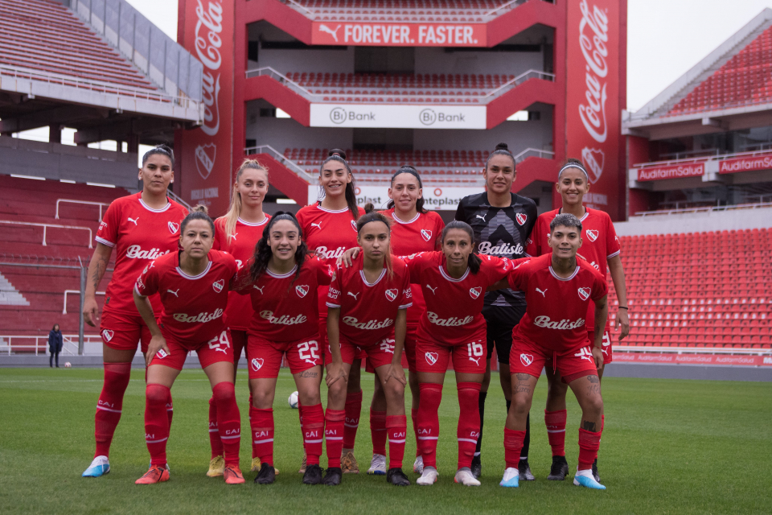

GANARON LAS PIBAS
Independiente ganó ante Banfield 2 a 0 por la fecha 13 del campeonato femenino.
El equipo dirigido por PABLO GOGLINO ganó por 2 a 0 frente a BANFIELD, en el estadio Libertadores de América Ricardo E. Bochini. Las Diablas tuvieron una gran mañana donde pudieron entrar en partido facilmente. Mas allá de que en la primera parte tuvieron buenas actuaciones individuales y estuvieron cerca del arco visitante, al Rojo le costó generar buenas asociaciones para la prosperidad del juego y se fueron al SIN GOLES. En el complemento, Banfield impuso una presión alta y su mediocampo desorganizó a Independiente. Y fue así que Britez quiso despejar un centro del equipo visitante y la mandó en contra al arco de CHIRIBELO para poner EL 1-0 PARCIAL . Banfield intentó hasta el final para poder abrir el marcador con centros desde la izquierda con Nayla Gallo, pero era ineficiente una vez que caían al área. El femenino debIndependiente mantuvo virtudes defensivas, y cumplidos los 27 minutos, Las Diablas aprovecharon la mala distribución y Luana Bernhard marcó el 2 a 0 final.